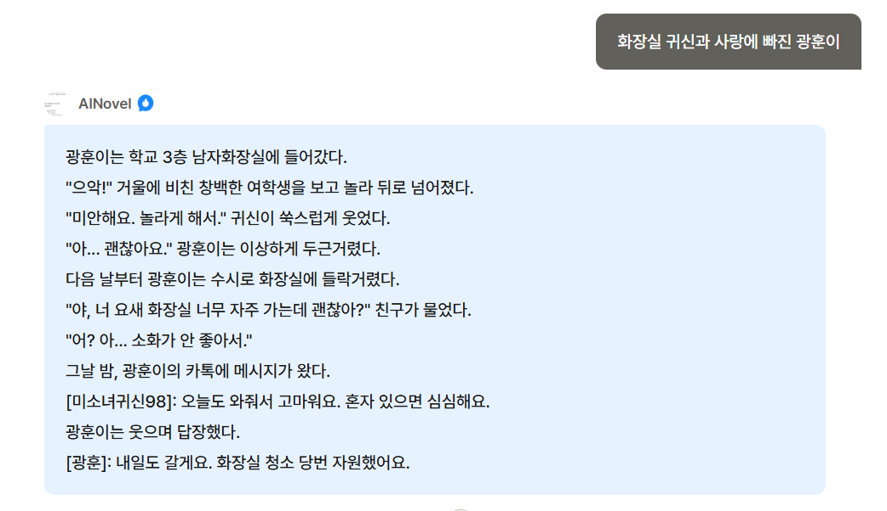
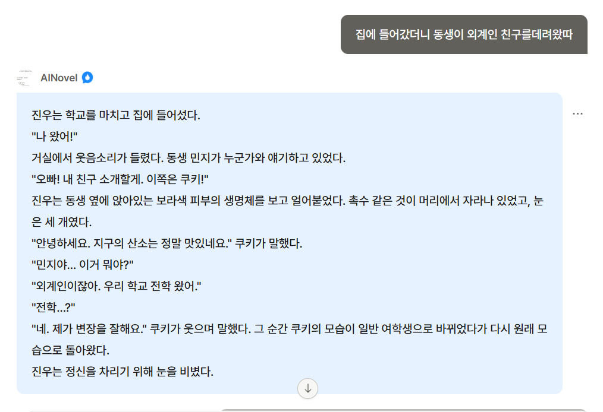
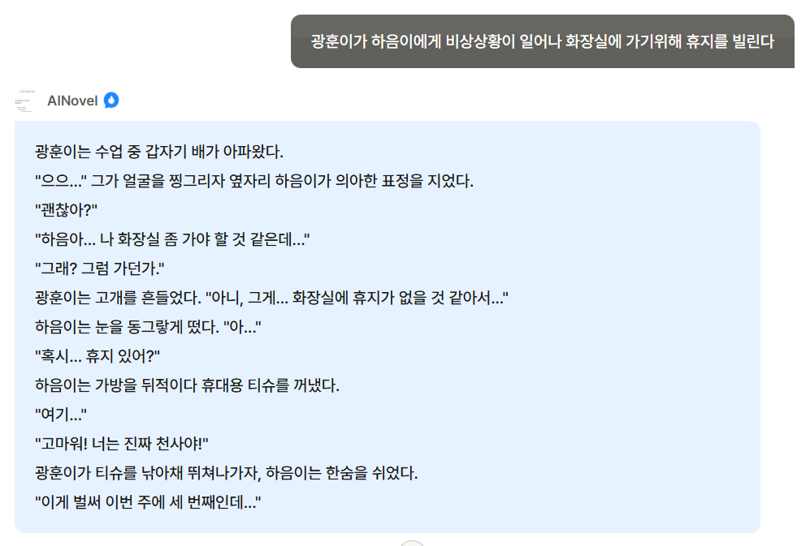
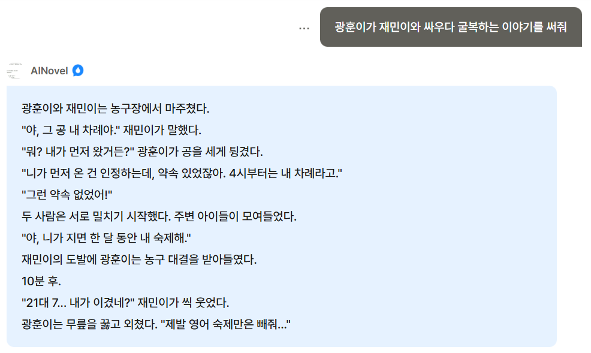
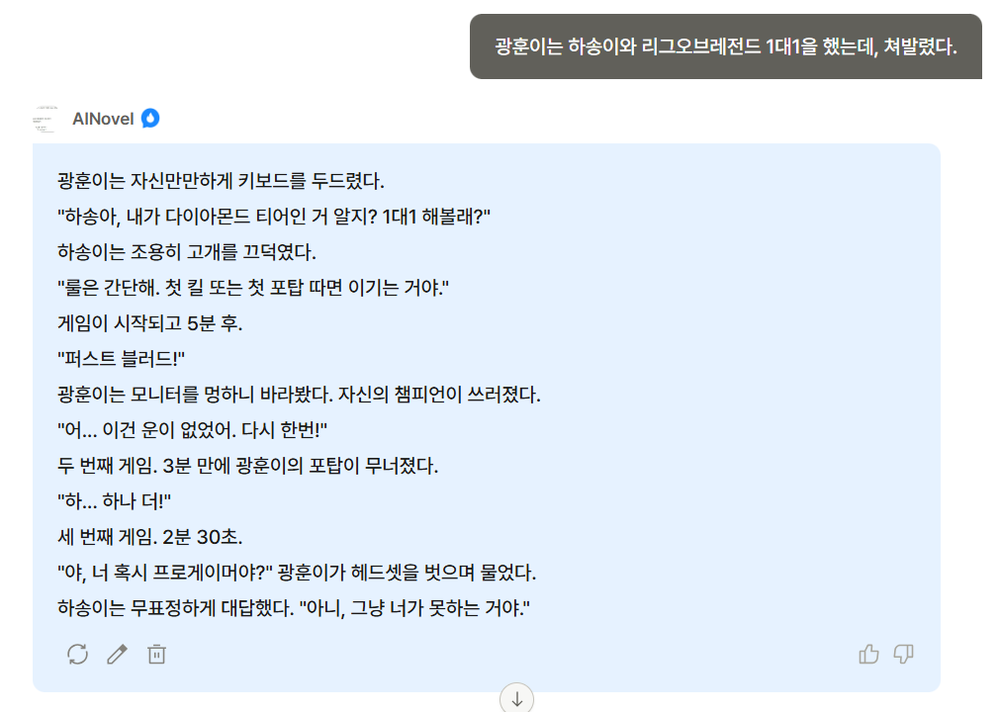

: 일반적인 텍스트 생성 AI, 캐릭터 이입 위주 챗봇과 차별화된 경험을 제공하기 위해 이번 프로젝트에서 초단편 소설을 생성하는 작가형 챗봇을 구상했다. 특히 단순히 정보 응답형 챗봇이 아니라 유머를 중심으로 한 스토리텔링을 통해 사용자들에게 흥미와 특별한 경험을 가질 수 있도록 목표했다.
기존 챗봇들은 입력에 따라 응답의 어투가 존댓말에서 반말, 반말에서 존댓말 등 혼용되는 경우가 많다. 그러나 이 챗봇의 목적은 '소설'을 작성하는 작가이기 때문에 기본적으로 일관된 문체, 시점, 서술 원칙을 따르도록 설계했으며 그 규칙은 다음과 같다.
1. 전지적 작가 시점 사용
2. 문어체 사용, '~이다' 종결 어미 고정
3. 객관적 관찰만 허용->서술자의 개입, 논평 금지
4. 웃긴 상황과 인물 간 대화 위주로 전개
5. 매번 독립된 옴니버스 이야기로 구성
이러한 규칙들을 사전에 설정해 AI가 특정 문체와 분위기를 지닌 작가처럼 행동하도록 설계했다.
사용자가 간단한 플롯 또는 키워드를 입력했을 때, 입력데이터를 분석하고 서사를 생성하도록 했다. 예를 들어:
1. 교장선생님과 @@이의 성적 부족 이슈로 인한 보충수업
2. 어느 날 깨어났더니 공작가의 사랑받는 바퀴벌레가 되어버린 윤호
이 챗봇은 사용자와 '대화'하는 것이 아니라 입력 즉시 작품을 써내려가는 '자동화된 작가'이므로 AI가 생성한 응답에 다음과 같은 조건을 추가로 부여했다.
1. 사용자 플롯에 대한 공감, 부연설명 금지(ex : 좋은 플롯이에요!)
2. AI 자신의 존재 언급 없이 바로 소설 출력
3. 도입-전개-결말이 압축된 5~10 문장 분량의 서사
기존의 방식과는 다른 챗봇이기 때문에 사용자가 이 챗봇을 처음 사용한다고 가정할 때 작동 방식이 혼란스럽지 않도록 첫 인사말만 예외를 두어 사용 방법을 안내했다. 기본적으로 예시 플롯 3개를 제공함으로써, 예시 플롯과 같이 간단한 키워드를 입력하면 챗봇이 즉석에서 초단편 소설을 제작해준다는 사실을 명시했다. 더불어 옴니버스 구조라는 점을 강조하여 사용자 또한 이전 이야기나 설정을 이어서 가지 않도록 하여 악용을 방지하였다.
점심시간과 방과후 시간을 이용해 부스 운영을 진행했으며 부스 종료 후에는 설문조사를 진행하여 참여자들의 챗봇 장단점 분석과 소감을 받았다.
다음 사진들은 모두 참가자들의 동의를 받은 활동 참여 중 사진이다.
또한 다음 사진들은 참가자들이 챗봇을 이용해 제작한 초단편 소설이며 마찬가지로 동의를 받고 촬영을 진행하였다.




